Как да програмирате по-бързо - процедури¶

Проектите, които предстои да проучим, имат сложна структура. За да се справим с тази сложност, ще използваме подход, известен като структурирано програмиране, разработен през 60-те години. Този подход опрости процеса на писане, разбиране и поддържане на сложни програми. Вместо да пишем сложни програми, които е трудно да се пренапишат, ако има нужда от това (това се нарича поддръжка) и където грешките трудно се откриват, можем да ги разделим на малки части, всяка от които решава една част от общата проблем.
За да направим проектите със сложна структура по-бързи и лесни, ще разделим големи скриптове на логически части, като всеки изпълнява една функция. Ние наричаме такива части процедури. Всяка процедура изпълнява определена функция и един скрипт, основната програма, ги извиква и свързва заедно, така че те правят цяло.
Реализиране на процедури в Scratch
В Scratch един от начините за реализиране на процедурите и ограничаване на такива сложни алгоритми в няколко по-прости е чрез използване на съобщения, същия механизъм, който използвахме за синхронизиране на поведението на различни спрайтове. Друг начин за реализиране на процедурите е да въведете свои собствени команди.
Създаване на нови блокове
За да създадете нов блок, изберете групата Моите блокове (1) и след това щракнете върху бутона Направете блок (2). Ще се появи прозорец за диалог, който позволява създаването на нови блокове. Трябва да въведете желаното име в полето за въвеждане (3), например, Начертайте триъгълник и потвърдете създаването, като щракнете върху бутона OK (4).

Новият блок `` Начертайте триъгълник`` (1) ще се появи в блоковата палитра, а новият начален блок Определи (2) ще се появи в областта на скриптове, други блокове, които ще бъдат използвани за изчертаване на триъгълник (3) трябва да се добави към този начален блок.
{kind=link}
Новият блок може да има и полета за въвеждане. Поради това ние можем да нарисуваме триъгълници с различна дължина на страните с един и същи блок. За да постигнем това, трябва да изберете опцията Редактиране от менюто за бърз достъп, която ще получим, като щракнете с десния бутон върху новия блок (1). Диалоговият прозорец Направи блок ще се отвори отново. От трите предлагани опции за добавяне на нови полета към блока, трябва да изберете Добавяне на име за въвеждане или текст (2) и полето за въвеждане ще се появи на блока (3); в този блок ще въведем a - името на променливата за дължината на страната на триъгълник.
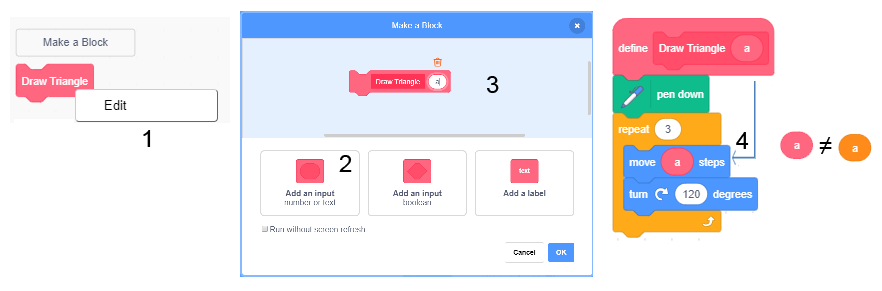{kind=link}
Ако бяхме избрали Добавяне на булева информация за въвеждане, полето за въвеждане щеше да има шестоъгълна форма и щеше да може да получава само логически блокове, а опцията Добавяне на етикет би позволила текста да се запише зад входа полета.
Запомнете. Когато искате да използвате променливата a в блоковете с дефиниция, трябва да плъзнете репортера на тази променлива от заглавката на дефиницията на блока (4). Следователно, не буквата a, нито репортерът a от блоковата палитра, а репортерът от заглавието на дефиницията
Името a, което въведохме в дефиницията на процедурата Начертайте триъгълник, се нарича параметър. Процедурите могат да имат повече от един параметър. Например, можем да създадем процедура Начертайте многоъгълник, който рисува редовни многоъгълници с различен брой страни, които имат различна дължина. Вместо да дефинираме отделни блокове за изчертаване на триъгълник, четириъгълник и други многоъгълници, с дадена дължина на страните, ще дефинираме само един блок с параметрите брой страни и дължини на страните. Конкретните стойности на параметрите ще зададем като аргумент на нововъведената команда. Този аргумент ще замени всяко появяване на броя на параметрите на страните в процедурата. Можем да кажем, че параметърът е посоченият заместител на място за аргумента.
 Разгледайте следните примери¶
Разгледайте следните примери¶
Пример 1 - Проект “Мрежа от квадрат蔶
Рисуване на хоризонтални линии
За да начертаем хоризонтална линия (успоредна на оста x), трябва да свържем всички точки, които имат еднаква стойност на координатата y. Например, ако x = 0, тогава ще нарисуваме само оста x. В началото ще поставим писалката от левия ръб на екрана в точката (-240,0), ще сложим писалката надолу, така че тя оставя отпечатък, когато се движи, и след това ще я настроим да се плъзга до точката ( 240,0). Там ще повдигнем химикалката (писалка нагоре) и можем да започнем да рисуваме друга линия.
Ако искаме да нарисуваме всички хоризонтални линии, чиято координата y е число, завършващо с 0 (делимо на 8), ще повторим описаната по-рано процедура за y = 180, 170, …, - 180.
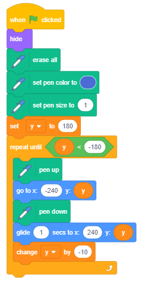{kind=link}
4078/5000 Character limit: 5000 За да направим процеса по-ясен, ще извлечем инструкциите за изчертаване на една хоризонтална линия и ще създадем отделна част - процедура, която ще извикаме, когато е необходимо.
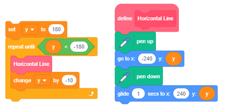{kind=link}
Рисуване на вертикални линии
Подобно на начертаването на хоризонтална линия, за да нарисуваме вертикална линия, трябва да свържем всички точки, които имат еднаква стойност на координатата x. В началото ще поставим писалката върху горния ръб на екрана, например в точката (0,180), ще сложим писалката надолу, така че тя оставя отпечатък, когато се движи, и след това ще я настроим да се плъзга до точката (0, -180). Там ще повдигнем химикалката (писалка нагоре) и можем да започнем да рисуваме друга линия.
Ако искаме да нарисуваме всички вертикални линии, чиято координата х е число, делимо на 10, ще повторим описаната по-горе процедура за x = -240, -230, …, 240.
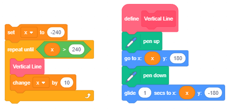{kind=link}
За да запазим това изображение на решетката от квадрати, получена чрез рисуване по този начин на хоризонтални и вертикални линии, ще трябва да щракнете с десния бутон върху сцената. Ще се появи опцията Запазване на изображението като. Тази опция ще ни позволи да запазим това изображение като фон. (Засега тази функция може да се използва само в онлайн редактора)
Запишете целия проект под името Grid.
Пример 2 - Проект “Различни мреж蔶
Искаме да направим предишната програма по-обща и да я използваме, за да нарисуваме решетка, съставена от по-малки и по-големи квадрати, както и да нарисуваме решетка, която не трябва да започва в горния ляв ъгъл на екрана и да завършва в долния десен ъгъл. Ще въведем променливите x min, x max, y min, y max и step. Те ще определят горната лява точка на мрежата (x min, y max), долната дясна точка на мрежата (x max, y min) и размера на квадратите в мрежата. Началните стойности ще бъдат зададени от входа.
По този начин можем да променим проекта Grid, който очертава само една решетка и получаваме по-общ проект Различни мрежи, който рисува различни решетки в зависимост от входните данни. Освен променливите, които споменахме по-рано, ще въведем променливата end, която има начална стойност 0 и която се променя само ако потребителят иска да спре да използва програмата. Всеки отговор, различен от „да“, оставя стойността непроменена.
Когато потребителят отговори на въпроса “Готово (да / не)?” с “да” променливата ще промени стойността си на 1, което е условието за излизане от цикъла и програмата ще спре да се изпълнява.

Пример 3 - Проект “Сград蔶
В този проект ще нарисуваме сложни изображения, като използваме само една процедура с параметри. Това е процедурата Начертайте правоъгълник с параметрите a и b за дължината на страните. За да направим основната програма четена, разделихме инициализацията на писалката в специална процедура PenSetup, която определя цвета и размера (дебелината) на писалката, която ще се използва за рисуване. Следващата фигура представя скриптите, които определят тези две процедури. Променливата единица е дефинирана в основната програма и тя позволява да се изчертават пропорционални правоъгълници с различни размери.
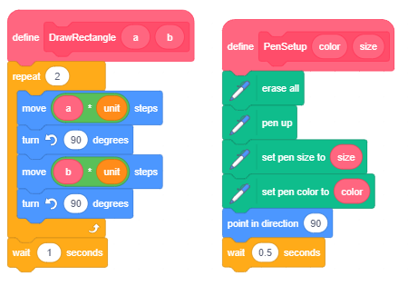{kind=link}
Създаване на проекта
Заредете фона Xy-grid-20px от фоновата библиотека. Това е решетка, съставена от 24x18 квадрата, със страни 20x20 пиксела. (Можехте сами да направите този фон, като използвате предишния проект). Този фон е подходящ, защото по него ясно виждаме пропорциите на изображенията, които искаме да създадем.
Използвайки вградения векторен редактор, нарисувайте квадрат 8x8 пиксела. Използвайте инструмента  , изберете режима на рисуване, без да запълвате обекта с цвят и задайте дебелината на контура да бъде 2. Поставете центъра на костюма да бъде в средата на квадрата.
, изберете режима на рисуване, без да запълвате обекта с цвят и задайте дебелината на контура да бъде 2. Поставете центъра на костюма да бъде в средата на квадрата.

Всеки спрайт може да направи рисунката, но този е удобен, защото показва как се формират рисунки и не е нужно да го крием, тъй като е достатъчно малък и не покрива рисунката.
Цялата рисунка ще се състои от 4 сгради, 5 квадратни квадрата широки и 13 квадрата високи, т.е. 100х260 пиксела. В нашия скрипт променливата единица е равна на дължината на страната на един квадрат на фона. Променливите на програмата а и b съхраняват координатите на точката, от която ще започне чертежа на сградата.
Забележка. Локалните променливи на процедурата Начертайте правоъгълник имат същите имена, но те са видими само в рамките на процедурата - това са локални променливи. За разлика от тях променливите a и b на основната програма са глобални променливи и те могат да се видят в целия проект.
В началото основната програма инициализира променливите и след това извиква процедурата за изграждане на чертеж 4 пъти, всеки път с различни координати на точката, от която започва рисуването. Сградите са начертани една до друга, тъй като x координатата на началната точка се увеличава с ширината на сградата. Следващата фигура показва скрипта на основната програма и изображението, получено от нейното изпълнение.
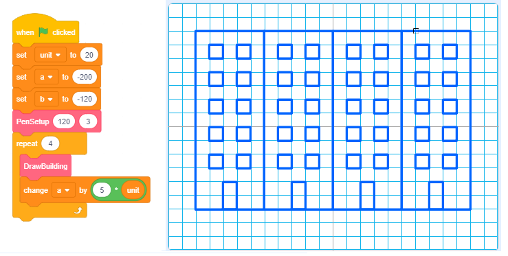{kind=link}
Процедурата DrawBuilding първо извиква процедурата DrawRectangle 2 пъти, а след това процедурата DrawWindows. В първия разговор процедурата DrawRectangle получава параметрите за начертаване на очертанията на сградата, а във второто за рисуване на вратата. Следващата фигура показва скриптите на процедурите DrawBuilding и DrawWindows.
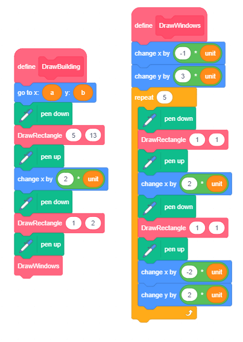{kind=link}
Ако бяхме задали размера да бъде 10 пиксела, щяхме да получим изображение, което е два пъти по-малко. Следващата фигура показва резултата от програмата, когато параметрите са същите като в обяснението (A) и когато стойностите на променливите се променят по следния начин: единица = 10, промяната на a в основната програма а = а + 10 x unit, промяната на височината на правоъгълника от 13 x unit to 23 x unit и броят повторения в процедурата DrawWindows от 5 на 10.
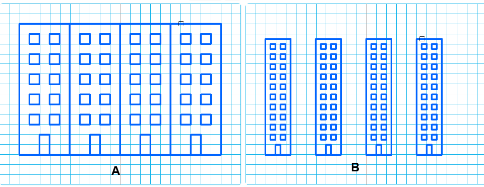{kind=link}
 Отговори на следните въпроси¶
Отговори на следните въпроси¶
Въпрос 1¶
- да
- Вярно.
- не
Q-49: Основната програма превъзхожда ли процедурите?
Въпрос 2¶
- да
- не
- Вярно.
Q-50: В Scratch процедурите реализирани ли са само по един начин?
Въпрос 3¶
- да
- Вярно.
- не
Q-51: Може ли новият блок да има полета за въвеждане?
Въпрос 4¶
- да
- Не, това са аргументи.
- не
- Вярно.
Q-52: Вярно ли е, че стойностите, въведени във входните полета на новия блок, се наричат параметри?
{kind=link}
{kind=link}
 Опитай!¶
Опитай!¶
Упражнение 1¶
Създайте процедура Square1 с параметри: координати x и y на горната лява точка и дължината на страната а. Процедурата трябва да нарисува квадрат със страни, успоредни на осите x и y. След това създайте скрипт, който извиква тази процедура няколко пъти и рисува концентрични квадратчета, както е представено на следващата фигура.

Упражнение 2¶
Създайте процедурата Square2 с параметри: координати x и y на горната лява точка, дължината на страната a и посоката на първия страничен ъгъл , която се изготвя от процедурата. След това създайте скрипт, който извиква тази процедура многократно и очертава 10 квадрата с горния ляв ъгъл на ставата, със същите страни, така че посоката на всяка следваща първа страна да се завърти на 36 градуса от посоката на първата страна на предишната квадрат.
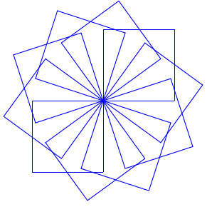{kind=link}
Упражнение 3¶
Създайте процедурата Правоъгълник с параметри: координати x и y на горната лява точка и дължините на страните a и b. Процедурата трябва да начертае правоъгълник с дължината на страната a, успоредна на оста x, и b успоредна на оста y. След това създайте скрипт, който извиква тази процедура и рисува правоъгълник с аргументите, които са зададени произволно, подобно на фигурата по-долу.
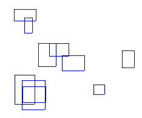{kind=link}
 Отстранете грешката!¶
Отстранете грешката!¶
Грешка¶
- Question
Ученикът искаше да направи сценарий, който очертава границата около триъгълниците, както е показано на фигура А. Той направи подходящия скрипт и отдели частта, която рисува триъгълника (показана отляво, до границата). Полученият от него резултат обаче е този, показан на фигура Б. Къде е грешката?

Отговор:
Вместо репортер на параметъра a, студентът поставя репортера на променливата a от основната програма в блока стъпки за преместване, разположен в процедурата.
 Обобщвние¶
Обобщвние¶
В този урок показахме как бихме могли да реализираме процедури чрез въвеждане на нови команди в Scratch. Научихме се как да правим нови блокове, със или без полета за въвеждане. Новите блокове, които имат полета за въвеждане, позволяват аргументите, въведени в тези полета за въвеждане, да бъдат препратени към дефиницията на блока, където те могат да бъдат поставени вместо към съответните параметри. По този начин един блок може да реализира множество действия, в зависимост от стойността на аргумента.
Примери за проекти: 8Studio
Нови концепции: Процедура, импортирани команди, параметър.
New commands:  - ,
- ,
 Създайте проект¶
Създайте проект¶
Проект 1 - “Геометрични форм蔶
Създайте версия на проекта “Геометрични фигури” от урок 5, като използвате процедури. Процедурите се реализират с използването на импортирани команди.
Проект 2 - “Градска улица”¶
Създайте процедури за изготвяне на:
сгради и врати във формата на правоъгълници с различни размери,
прозорци с различни форми (квадратчета, правоъгълници, кръгове) и размери,
покриви с трапецовидна форма с различни основни размери и височини.
Свържете тези процедури в проекта “Градска улица”, който показва множество различни сгради.
Проект 2 - “Аритметика”¶
Създайте процедури, които трябва да бъдат свързани в проекта на Аритметика. Процедурите трябва да тестват знанията за събиране, изваждане, умножение и деление. Проектът трябва да има интерфейс, както е на следващата фигура.
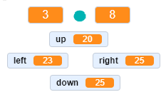{kind=link}
Двата монитора в горната част, между които е разположен аритметичният знак, трябва да показват числата, генерирани на случаен принцип, а долните четири трябва да показват числата, които биха могли да бъдат резултат, но само един трябва да бъде правилният резултат. Играчът избира отговора, който смята за правилен, като използва съответния клавиш със стрелки. Ако играчът отговори правилно, той / тя ще получи съответното съобщение и резултатът му ще се увеличи с 1. Тестът се прави, когато играчът отговори на 20 въпроса и получи съобщението, показващо процента на въпросите, отговорили правилно.
Създайте проекта по следния начин:
В процедурата Събиране трябва да се генерират две числа на случаен принцип, сумата с от интервала [10,20] и първото добавяне от интервала [1,15]. Второто допълнение b = c - a и трите неправилни резултата от интервала [c-3, c + 3] ще бъдат установени въз основа на тези две числа.
В процедурата Изваждане, две числа трябва да се генерират на случаен принцип, Минута a от интервала [10,20] и изваждане b от интервала [1, a-2]. Разликата c = a - b и трите неправилни резултата от интервала [c-2, c + 2] ще бъдат установени въз основа на тези две числа.
В процедурата Умножение, два фактора от интервала [2,9] трябва да бъдат генерирани на случаен принцип. Продуктът c = a * b и трите неправилни резултата от интервала [c-10, c + 10] ще бъдат установени въз основа на тези два фактора. Уверете се, че грешните отговори са по-големи от двата фактора (например, ако един от грешните отговори, генерирани за фактори 2 и 3, е 2, резултатът трябва да се генерира отново).
В процедурата Деление трябва да се генерират две числа на случаен принцип, коефициент c от интервала [2,9] и делител b от интервала [2,9]. Дивидентът a = b * c и трите неправилни резултата от интервала [c-3, c + 3] ще бъдат установени въз основа на тези две числа.
В основната програма първоначалните стойности на променливите точки и опити трябва да са 0. След това в цикъла, който ще повтаря всичко, докато броят точки не достигне 20, трябва да генерирате аритметичната операция, извикайте подходяща процедура и поставете получените операнди в съответните монитори с аритметичната операция и разпределете правилните и 3 грешни отговора на случаен принцип в мониторите за отговор. (Подреждането на отговорите може да бъде постигнато и с отделна процедура)
Тогава програмата трябва да приеме отговора на потребителя и в зависимост от това дали е правилна или не, да покаже съответното съобщение и да промени променливите точки и опити. След излизане от цикъла програмата трябва да отчита процента на задачите, които потребителят е решил правилно.